Una vez que hayas instalado QuickAnki, es necesario configurarlo según tus preferencias. Para ello, abre la extensión siguiendo estos pasos para acceder al menú emergente de opciones rápidas:
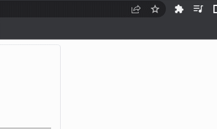
Dentro de este menú, podrás controlar la activación o desactivación de la extensión, así como habilitar o deshabilitar la función "Mouse" que te permite buscar el significado de una palabra con tan solo seleccionarla. También podrás seleccionar qué diccionario estará activo y, por último, determinar qué tecla se utilizará como acceso directo para buscar el significado de una palabra en caso de que el Mouse no realice la búsqueda correctamente.
Para acceder a todas las opciones avanzadas y personalizar la extensión según tus preferencias, haz clic en los tres puntos ubicados en la esquina superior derecha. Esto abrirá una ventana que contiene cuatro pestañas: "Opciones de Extensión", "Opciones de Servicios", "Opciones de Diccionarios" y "Ayúdanos a Crecer". A través de estas pestañas podrás explorar y ajustar diversas configuraciones para adaptar la extensión a tus necesidades.
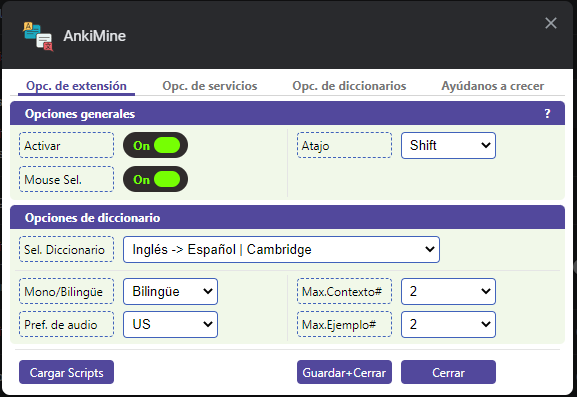
Modal de Opciones
Permíteme explicar cada una de estas pestañas en detalle:
- Pestaña de Opciones de Extensión:
- Activar: Esta opción te permite activar o desactivar la extensión según tus necesidades. Es recomendable mantenerla desactivada mientras navegas por Internet, ya que podría abrir el diccionario automáticamente cada vez que selecciones una palabra, lo cual puede resultar molesto. Se recomienda activarla únicamente cuando estés haciendo minado de oraciones.
- Atajo: Aquí puedes configurar una tecla de acceso directo para seleccionar las palabras o frases que deseas traducir. Tienes cuatro opciones disponibles: "Off" (deshabilita el acceso directo), "Shift", "Ctrl" y "Alt". Por ejemplo, si estás leyendo un artículo sobre Anki y encuentras una palabra desconocida como "Program", puedes seleccionarla y utilizar la tecla de acceso directo que has configurado. Esto abrirá una ventana emergente del diccionario, donde podrás ver la traducción y algunos ejemplos de uso:
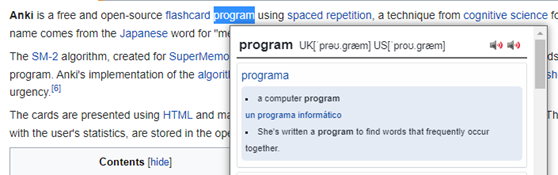
- Mouse Sel. (Selección con el mouse): Esta opción te permite abrir el diccionario simplemente seleccionando una palabra con el mouse, sin necesidad de utilizar la tecla de acceso directo configurada.
- Sel. Diccionario. (Seleccionar diccionario): En esta opción se cargan todos los diccionarios que tienes activados en la pestaña "Opciones de Diccionarios" (que explicaré más adelante). El diccionario seleccionado aquí será el que esté activo en ese momento. Por ejemplo, en la imagen del modal de opciones se muestra que está activo el diccionario "Inglés -> Español | Cambridge", lo que significa que solo funcionará para traducciones del inglés al español.
- Mono/Bilingüe: Esta opción te permite convertir el diccionario en uno monolingüe o bilingüe. Si seleccionas "Bilingüe", la ventana del diccionario mostrará la traducción de la palabra, como se muestra en la imagen anterior con el ejemplo de "Program". En cambio, si seleccionas "Monolingüe", la ventana mostrará ejemplos en contexto relacionados con la palabra seleccionada:
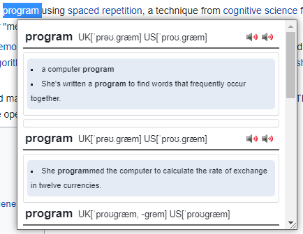
- Pref. de audio (Preferencia de audio): Aquí puedes seleccionar el tipo de pronunciación que prefieres que se guarde en Anki, ya sea con acento británico o acento americano, en caso de estar estudiando inglés.
- Max.Contexto# (Máximo de contexto): Esta configuración te permite establecer la cantidad de ejemplos de contexto que deseas ver junto con la palabra seleccionada.
- Max.Ejemplo# (Máximo de ejemplos): Esta configuración te permite establecer la cantidad de ejemplos de la palabra que deseas ver.
- Pestaña de Opciones de Servicios
- Pestaña de Opciones de Diccionarios
- Pestaña de Ayúdanos a Crecer
En esta pestaña encontrarás las opciones generales de la extensión:
También encontrarás la sección de opciones de diccionarios, la cual incluye las siguientes configuraciones:
Por último, si quieres volver a ver estas instrucciones simplemente haz clic en el icono de interrogación a la derecha de “opciones generales”.
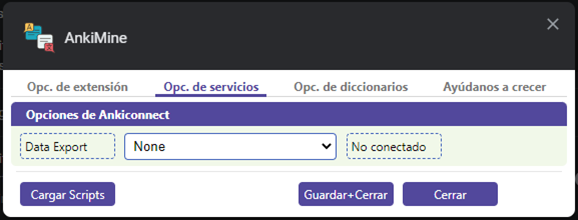
En esta pestaña, estableceremos la conexión entre la extensión y Anki, la plataforma de tarjetas de estudio.
En la opción "Data Export" encontraremos dos selecciones posibles, siendo "None" la opción predeterminada. La otra opción es "Ankiconnect".
Antes de continuar, es necesario instalar el complemento Ankiconnect en nuestro Anki. Para descargar e instalar este complemento, copia y pega el siguiente código en la interfaz de Anki: 2055492159
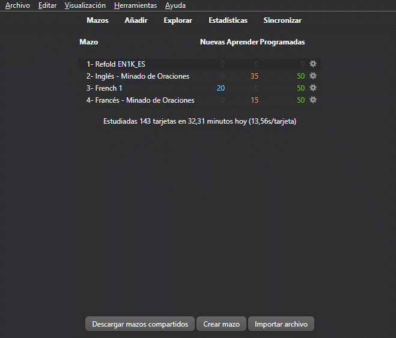
Una vez que hayas instalado Ankiconnect, es importante reiniciar Anki para asegurarnos de que la extensión se conecte correctamente.
A continuación, te solicitaré que descargues e instales este mazo de prueba en tu Anki. Una vez instalado, puedes desinstalarlo inmediatamente. La finalidad de esto es guardar un formato de tarjetas al cual llamamos "Minado de oraciones - QuickAnki", el cual utiliza el mismo estilo de diseño de las tarjetas de los mazos de Refold (cabe aclarar que este mazo solo proporciona el diseño y no los mazos de Refold en sí). Si deseas adquirir los mazos de Refold, te recomiendo visitar su página web. La instalación de este mazo es importante para asegurar un diseño óptimo de las tarjetas al estudiar y realizar el minado de palabras, también es necesario para la configuración.
Excelente, ahora que tienes Ankiconnect y el mazo de prueba ya instalados, podemos ajustar la pestaña "Opciones de servicios". Para comenzar, selecciona la opción "Ankiconnect" en la sección "Data Export". Al marcar Ankiconnect, la vista cambiará y te recomiendo que realices la configuración de la siguiente manera:
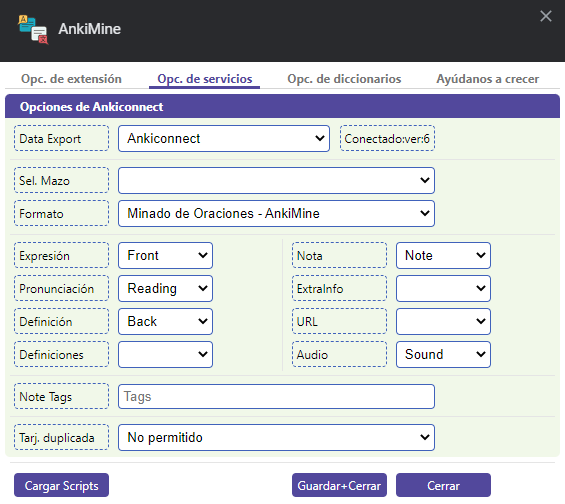
En esta sección, estaremos configurando cómo se guardarán las tarjetas en Anki, incluyendo su formato y en qué mazo se almacenarán. Para cambiar el mazo en el que se guardarán las palabras que estás minando, simplemente selecciona el mazo deseado en la opción "Seleccionar Mazo" (aquí se cargarán todos los mazos disponibles en tu Anki).
Además, la última opción denominada "Tarjeta Duplicada" te permite evitar la inclusión de palabras repetidas en tu mazo. Sin embargo, si deseas guardar palabras duplicadas, puedes modificar esta configuración según tus preferencias.
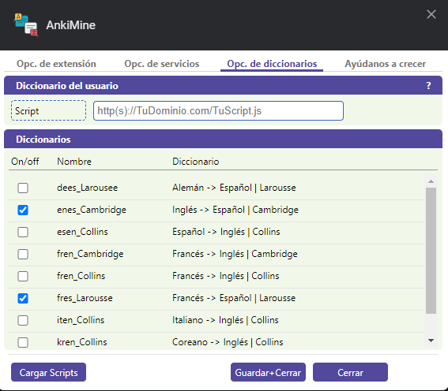
En esta pestaña, encontrarás todos los diccionarios disponibles en la extensión. Estos se muestran en la sección "Diccionarios" ubicada en la parte inferior. Puedes activar o desactivar los diccionarios haciendo clic en los cuadros a la izquierda de cada uno. Los diccionarios activados aparecerán en la primera pestaña, "Opciones de extensión", donde podrás seleccionar cuál deseas utilizar (solo se puede utilizar uno a la vez).
En la sección "Diccionario del usuario", tienes la opción de instalar tu propio diccionario. Sin embargo, es importante mencionar que esto requiere conocimientos de programación. Si deseas obtener más información sobre cómo desarrollar tu propio diccionario, puedes hacer clic en el icono de interrogación que se encuentra a la derecha de la sección. Allí encontrarás una guía que te ayudará a comenzar. Además, quiero destacar que estamos trabajando para agregar más diccionarios a QuickAnki, así que te pedimos paciencia y confianza en nuestro equipo mientras seguimos mejorando la extensión.
Retomando el tema de la activación de los diccionarios, como mencioné anteriormente, debes activar o desactivar los diccionarios utilizando los cuadros de selección ubicados a la izquierda de cada uno. Una vez que hayas decidido cuáles deseas activar, debes hacer clic en el botón inferior que se denomina "Cargar Scripts". Esto actualizará los diccionarios en la pestaña número 1, "Opciones de Extensión", permitiéndote seleccionar y activar el que desees utilizar.
Una vez completado este paso, simplemente haz clic en "Guardar y Cerrar" para finalizar la configuración. Ahora estás listo para empezar el minado de oraciones utilizando la extensión.
En esta pestaña encontrarás una oportunidad de apoyar el desarrollo continuo de nuestra extensión. Si consideras que esta herramienta es útil y deseas contribuir a su mejora y la incorporación de nuevas funciones, te invitamos a realizar una donación a través de PayPal.
Tu generosa contribución nos ayuda a cubrir los costos de mantenimiento, actualizaciones y el tiempo invertido en el desarrollo de la extensión. Cada pequeña donación marca una gran diferencia y nos motiva a seguir ofreciendo una experiencia de calidad.
Si deseas mostrar tu apoyo y realizar una donación, simplemente haz clic en el botón de donación. Serás redirigido a nuestra página de donaciones en PayPal, donde podrás realizar tu contribución.
Agradecemos sinceramente tu generosidad y apoyo. Tu donación nos impulsa a seguir mejorando y añadiendo nuevas características a la extensión. ¡Muchas gracias por formar parte de nuestro proyecto y ayudarnos a crecer!
Para el ejemplo, he creado un mazo en Anki llamado "Test". Cuando nos disponemos a empezar el minado de oraciones, el primer paso será activar la extensión, seleccionar el diccionario que deseamos utilizar y, por último, elegir el mazo en el que se guardarán las palabras minadas.
Supongamos que estamos estudiando y leemos un artículo en internet, y queremos minar una palabra. Al seleccionarla, aparecerá un pequeño modal con la traducción y algunos ejemplos de uso. Dependiendo del diccionario seleccionado, podremos escuchar su pronunciación y, en algunos casos, se mostrará la representación fonética utilizando el Alfabeto Fonético Internacional (IPA).
Al desplazarnos hacia abajo en la ventana emergente, podemos observar una nota con parte del párrafo que hemos seleccionado. Podemos modificarla según nuestras preferencias, agregar alguna nota de ayuda o incluso dejar el párrafo o diálogo del cual hemos extraído la palabra. Por ejemplo, si utilizamos el diccionario italiano-inglés, podríamos incluir en las notas el significado en español para aquellos estudiantes de habla hispana que aún no dominan completamente el inglés. Esta nota se guardará en Anki.
Para agregar la palabra a Anki, simplemente debemos decidir cuál de los ejemplos que se muestran nos gusta más y hacer clic en el icono verde con un signo "+" para que se añada automáticamente al mazo que hemos especificado a la extensión.
Es obligatorio tener Anki abierto mientras minamos, de lo contrario la extension no podrá conectarse a Anki y no podrá crear las tarjetas.
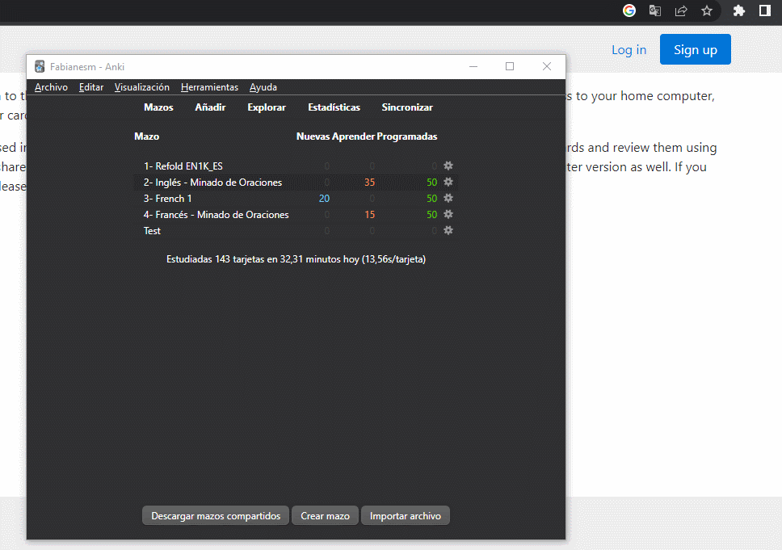
Índice
¿Cómo hacer minado de oraciones en Netflix?
Para minar palabras en series que estamos viendo en Netflix, la funcionalidad de la extensión es la misma que si lo hiciéramos en un artículo o página de internet. La única diferencia es que los subtítulos de las series de Netflix no son "clickeables", por lo tanto, no podemos seleccionar las palabras. Para ello, debemos instalar otra extensión llamada Language Reactor.
Language Reactor nos proporciona el significado, pero para utilizar nuestra extensión de diccionario, recomiendo seleccionar nuevamente la palabra que no entendemos desde el cuadro rojo que se muestra en la imagen.
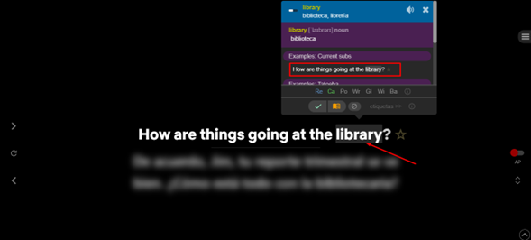
Sugiero que el minado de la palabra se haga desde el cuadrado rojo, ya que contiene el diálogo exacto que se muestra en la serie, y eso se guardará en Anki. Si nos desplazamos hasta el final de la ventana, podremos observar una nota adicional que también incluye el diálogo exacto y que podemos modificar si así lo deseamos.
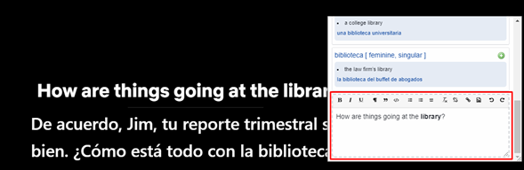
Para agregarlo a Anki, simplemente debemos seleccionar el ejemplo que más nos guste de entre todos los que se muestran y hacer clic en el icono verde con un símbolo de suma ("+") para que se agregue automáticamente al mazo que hemos indicado a la extensión.
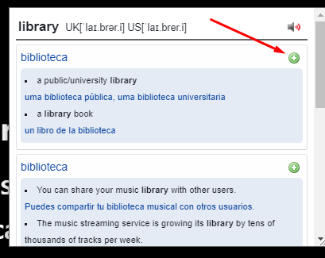
¿Cómo agregar imágenes a las tarjetas de Anki?
Supongamos que acabas de minar esta palabra:
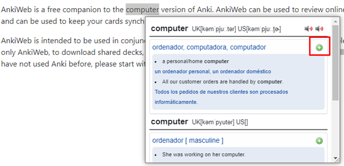
Después de haber minado la palabra, debemos buscarla en el mazo de tarjetas, pero no con el propósito de estudiarla, sino de modificarla. Para ello, debemos hacer clic en "Explorar" en Anki:
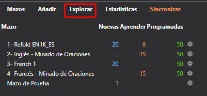
Se abrirá una nueva ventana que mostrará todos nuestros mazos en el lado izquierdo, mientras que en el lado derecho aparecerán las tarjetas del mazo seleccionado.:
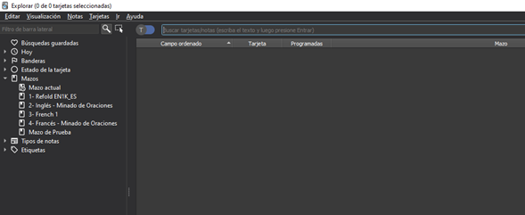
El mazo en el que miné la palabra "Computer" se llama Mazo de Prueba. Para seleccionarlo, simplemente lo elijo y, como mencioné anteriormente, en el lado derecho se mostrarán todas las tarjetas que contiene dicho mazo:
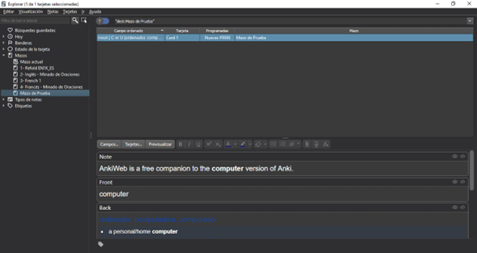
Cuando contamos con pocas palabras, resulta sencillo encontrar la palabra a la cual deseamos asociar una imagen. Sin embargo, cuando disponemos de una gran cantidad de palabras, lo más conveniente es emplear el siguiente método luego de seleccionar el conjunto de palabras clave:
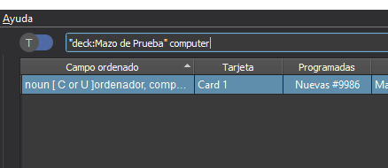
Es fundamental incluir "deck: NOMBRE DE MAZO" seguido de la palabra que deseamos utilizar para la búsqueda de imágenes. Esto indica que se buscará dicha palabra únicamente en ese mazo específico y no en todos los mazos instalados en Anki. Una vez que hayamos encontrado la palabra, buscamos en la sección inferior el campo denominado "Picture":
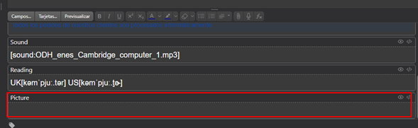
Para agregar una imagen, puedes buscarla en Google o capturarla de una serie que estés viendo. En mi caso, usaré Google para buscar la palabra "minada" y luego tomaré una captura de pantalla de la imagen que más me guste utilizando el comando de captura de pantalla de Windows.
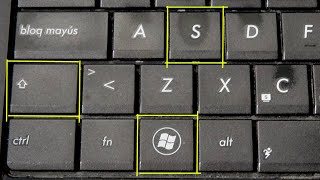
Cuando obtengas la captura de la imagen que deseas agregar a la tarjeta, intenta copiarla y almacenarla en la memoria del portapapeles de tu ordenador, ya que lo siguiente que debes hacer es volver a Anki y pegarla utilizando el comando de Windows Ctrl+V en el campo "Picture:".
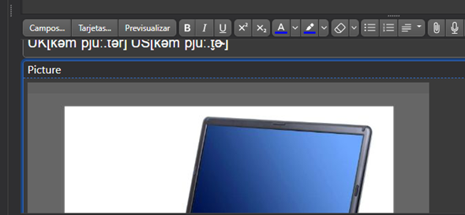
Listo, no es necesario guardar ni realizar ninguna acción adicional. Simplemente cierra la ventana y cuando vuelvas a ver tu tarjeta durante el estudio, la imagen debería estar visible de inmediato.
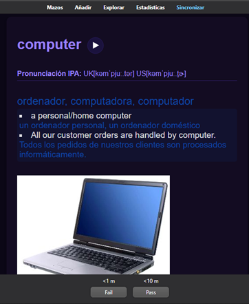
¿Cómo agregar otros diccionarios?
Para agregar otros diccionarios, es necesario contar con conocimientos de programación y crear un archivo JavaScript que cumpla con la función requerida. Una vez que el archivo esté funcionando correctamente, debes cargarlo en un dominio y copiar la URL del archivo en la pestaña "Opciones de diccionarios", en el campo "Script". Si el archivo funciona y has copiado la dirección correcta, presiona el botón "Cargar Scripts", y tu diccionario debería aparecer en la pestaña "Opciones de extensión" para poder utilizarlo. Recuerda que, al hacer clic en el icono de interrogación que se encuentra en la pestaña "Opciones de diccionarios", podrás acceder a una guía sobre cómo crear un diccionario en JavaScript. Ten en cuenta que estamos trabajando en traer más diccionarios a QuickAnki, así que ten paciencia y confía en nosotros.